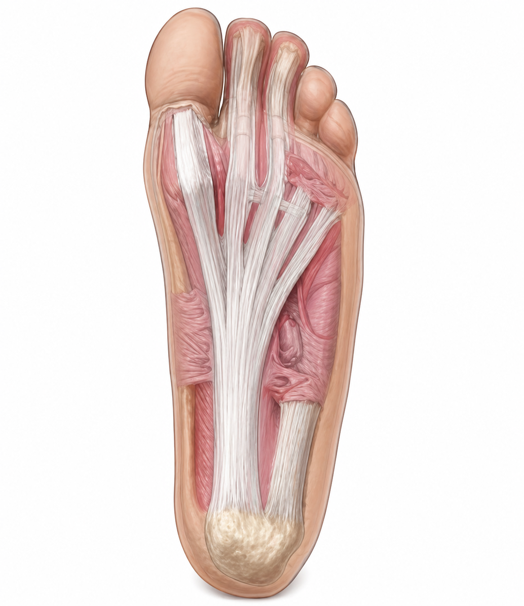
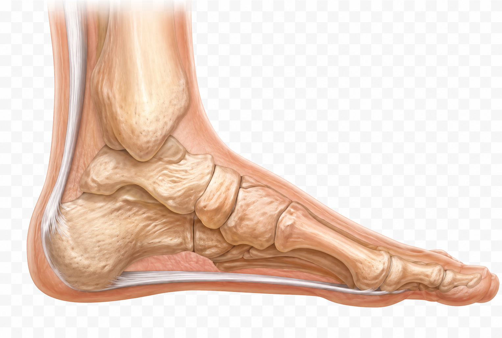
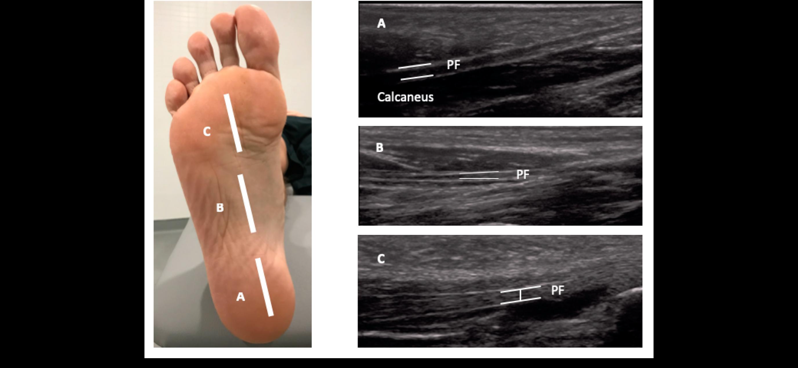
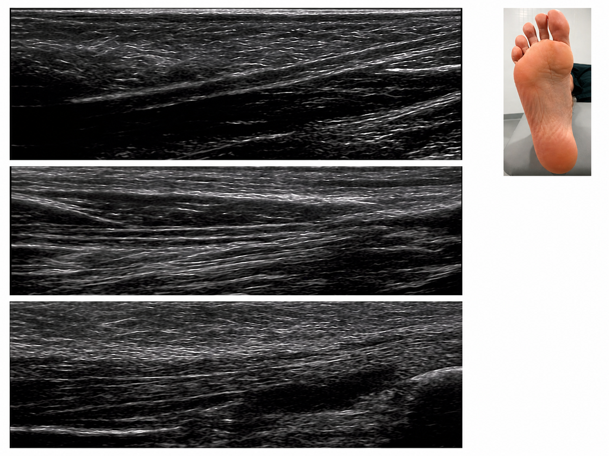
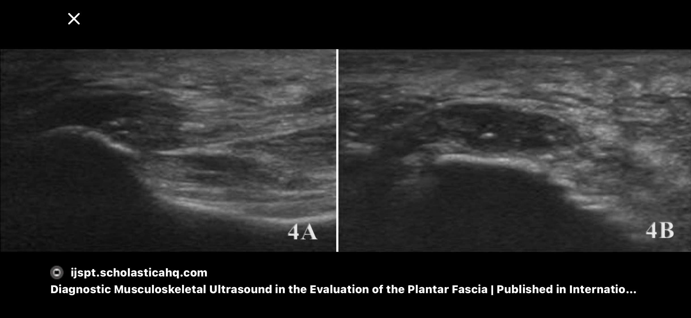
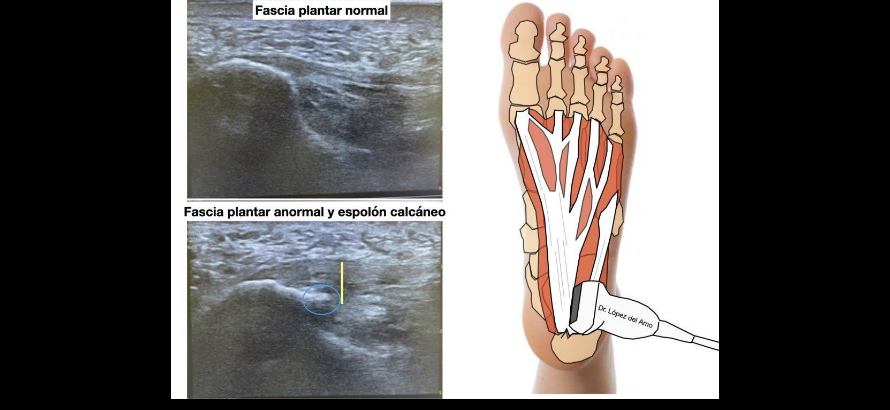
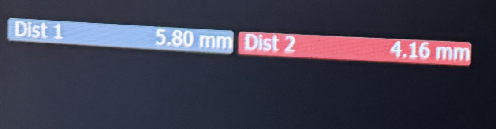

Plantar fasciitis
Ultralyd af fascia plantaris — diagnostik og klinisk vurdering
Klinisk baggrund
Plantar fasciitis er den hyppigste årsag til hælsmerter og udgør op mod 15% af alle fodrelaterede konsultationer. Tilstanden skyldes en degenerativ enthesopati ved fasciens udspring fra calcaneus — ikke primært en inflammatorisk proces, selvom betegnelsen "fasciitis" antyder dette.
Den typiske patient præsenterer med belastningsudløste hælsmerter, der er værst ved de første skridt om morgenen eller efter hvile, og gradvist aftager ved gang. Smerterne er lokaliseret til den mediale og centrale del af hælen, svarende til fasciens insertion på calcaneus.
Hvornår er ultralyd indiceret?
- Klinisk diagnose er usikker — ekskluder andre årsager til hælsmerter
- Manglende respons på initial konservativ behandling (>6–8 uger)
- Vejledning af injektion (kortikosteroid eller PRP)
- Monitorering af behandlingssvar
- Bilateral præsentation — mistanke om inflammatorisk artropati
Anatomi og scanningsplan
Fascia plantaris er en tyk fibrøs aponeurose der udspringer fra calcaneus' mediale tuberositas og forløber distalt langs fodsålen, hvor den deler sig i fem stråler til de proksimale phalanger. Fascien fungerer som en statisk stabilisator af den mediale fodbuende og absorberer aksiale belastningskræfter.


Probe og patientpositionering
- Probe: Lineær høj-frekvens transducer, 12–18 MHz
- Patientposition: Liggende på maven med foden i neutralposition og tæerne hængende frit over kanten — eller siddende med foden fladt på undersøgelseslejet
- Start: Longitudinelt snit langs fasciens akse, med probens proksimale ende over calcaneus. Dette er primærplanet.
- Supplér: Transversalt snit for at vurdere fasciens bredde og lateral/medial fordeling af patologi

Det primære diagnostiske billede opnås ved position A — proksimalt, med calcaneus som bagerste ekkostruktur og fasciens insertion tydeligt visualiseret.
Normale og patologiske fund
Normalbilledet
Normal fascia plantaris fremstår som en tynd, hyperekkoisk, fibrillær struktur med parallelle linier og skarp afgrænsning mod calcaneus proximalt. Den minder om en velorganiseret kabelstruktur — ensartet og regelmæssig hele vejen.

Plantar fasciitis — det patologiske billede
Ved fasciitis mister fascien sin velorganiserede fiberstruktur. Billedet beskrives som det "mudrede" eller "opløste" billede — som om fibrene er gået i stykker. Typiske fund:
Normalt
- Tykkelse 2–4 mm
- Hyperekkoisk (lys)
- Homogen, fibrillær struktur
- Parallelle linier
- Skarp afgrænsning mod calcaneus
- Ingen ødem / væske
Plantar fasciitis
- Tykkelse >4 mm (typisk 5–8 mm)
- Hypoekkoisk (mørk, "mudret")
- Uhomogen, tab af fibrillært mønster
- Kaotisk / brudt struktur
- Sløret afgrænsning
- Evt. ødem eller øget kartegning


Måling af fascietykkelse
Tykkelsen måles i det longitudinelle plan, 1 cm distalt for calcaneus-insertionen, i hvile uden dorsalfleksion. Sammenligning med kontralateral side er værdifuld.
| Fund | Tykkelse | Fortolkning |
|---|---|---|
| Normal | 2,0 – 4,0 mm | Fysiologisk variation |
| Grænseværdi | 4,0 – 5,0 mm | Vurdér øvrige UL-fund og klinik |
| Patologisk | > 4,0–5,0 mm | Støtter diagnosen plantar fasciitis |


Klinisk vurdering og behandling
UL-fundene skal altid tolkes i sammenhæng med den kliniske præsentation. Et tykt, hypoekkoisk fund uden symptomer kræver ikke behandling. Omvendt kan en patient med klassiske symptomer og borderline UL-fund sagtens have plantar fasciitis klinisk.
Konservativ behandling (1. linje)
- Stræk af fascia plantaris og achillessene — dokumenteret effekt
- Hælindlæg og aflastning
- Skomodifikation
- Fysioterapi med ekscentrisk træning
- NSAID kortvarigt ved akut fase
Intervention
- UL-vejledt kortikosteroidinjektion: Effektiv på kort sigt (6–8 uger). Risiko for fascieruptur ved gentagne injektioner — maksimalt 2–3 per forløb. Injiceres i det perифascielle væv, ikke ind i selve fascien.
- PRP (platelet-rich plasma): Voksende evidens for effekt ved kronisk fasciitis. Anvendes når steroid har svigtet.
- ESWT (stødbygebehandling): Effektiv ved kronisk tilstand. Kan kombineres med UL-vejledning.
Hvornår revurderes?
Ved manglende bedring efter 3–6 måneders konservativ behandling bør diagnosen revurderes. UL kan gentages for at vurdere ændring i tykkelse og ekkogenicitet som surrogatmarkør for behandlingssvar.